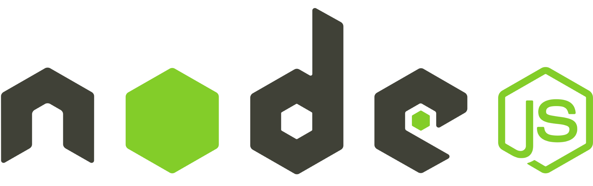

DESARROLLO WEB · SISTEMAS A MEDIDA
Construyo soluciones digitales modernas
Ayudo a negocios, emprendedores e instituciones a transformar ideas y procesos en sitios web y sistemas claros, rápidos y mantenibles.
<hola mundo!/>
3+ años
React
TypeScript

Node.js
PHP
MySQL
Tailwind CSS
Claude
Perfil
3 años de experiencia en desarrollo web, interfaces modernas y sistemas administrativos. Enfocado en construir soluciones claras, funcionales y mantenibles.
Construyo soluciones digitales modernas, ayudo a negocios, emprendedores e instituciones a construir y mejorar su presencia digital. Analizo tu objetivo, defino la estructura y desarrollo con foco en rendimiento y seguridad.
-Cada proyecto se adapta a tu necesidad.